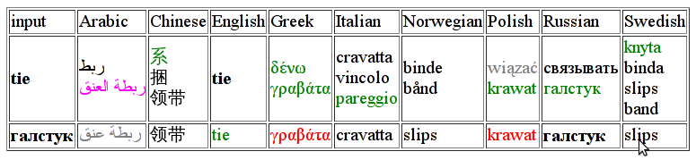

The Kelly project set out to develop principled language learning resources for many different language combinations using corpus information. We compiled the frequency lists from representative corpora and selected their subsets using pedagogically relevant principles following CEFR, the Common European Framework of Reference for Languages.
The University of Leeds worked on the lists for three languages: Arabic, Chinese and Russian, while other partners worked on English, Greek, Italian, Norwegian, Polish and Swedish.
The corpora for our languages were collected as a large snapshot of texts available for these languages on the Web, using technologies discussed in:
Serge Sharoff. Creating general-purpose corpora using automated search engine queries. In Marco Baroni and Silvia Bernardini, editors, WaCky! Working papers on the Web as Corpus, Gedit, Bologna, 2006. http://wackybook.sslmit.unibo.it
Frequency lists for Arabic, Chinese and Russian
All lists are in the MS Excel format with information on the word frequency in terms of ipm (instances per million of words; this gives a normalised picture of the average frequency of words, no matter the size of an individual corpus used), as well as the CEFR level associated with this word (ranging from A1 for absolute beginners to C2 for advanced students).
In addition to the frequency list the dictionary also includes illustrative examples, their translations into English, patterns of stress, as well as a list of the most common multiword expressions in Russian. See the introduction to the dictionary
for more information.
There is also a database interface, which can be used to explore the links between words selected for each of these languages. It gives you an idea how many basic meanings a word has in each language, and how the meanings vary between the languages. For example,

The word tie is ambiguous in English, but the words γραβάτα, krawat, галстук in respectively Greek, Polish and Russian have only one basic meaning (translations shown in red are symmetrical to the source word shown in bold).
Evaluation
It is important to know how well our intuition about the relevance of the most frequent words in each language matches the experience of language learners. We have conducted an extensive set of evaluations using online surveys, see the statistics below.